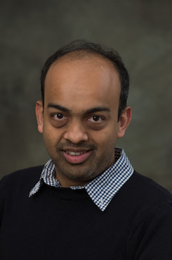

Nachiket Kapre's Academic Page

Assistant Professor, School of Computer Engineering, NTU
Chief Technology Officer, Plunify Inc.
Junior Research Fellow, Imperial College London (2010-2012)
Ph.D., California Institute of Technology (2010)
MS CS, California Institute of Technology (2006)
MS EE, California Institute of Technology (2005)
CV and Publications | HTML | PDF
Google Scholar Profile | Link
Research | Link
Philosophy/Quotes | Link
| 2015-16 | Semester 1 |
| CE4052 | Embedded Software Development |
| CE3001 | Advanced Computer Architecture |
| 2014-15 | Semester 1 |
| CE4052 | Embedded Software Development |
| CE1005 | Digital Logic |
| 2014-15 | Semester 2 |
| CE4054 | Programmable System-on-Chip |
| 2013-14 | Semester 1 |
| CE7451 | Research Methods in Computer Science & Engineering |
| CE4052 | Embedded Software Development |
| ES7501 | Electronic Design Automation |
| 2013-14 | Semester 2 |
| CE4054 | Programmable System-on-Chip |
I am looking for qualified and motivated graduate students to join my group as PhD students and RAs. I have part-time openings for Final Year UG and MSc students with good programming and software engineering skills.
| 10/8/2015 | I'm PI on a Tier-1 grant for Machine Learning in FPGA CAD (S$100K). |
| 4/8/2015 | I'm a Co-PI on a Delta Electronics grant led by Arindam (S$100K Co-PI). |
| 15/6/2015 | I'm a Co-PI on an MIT-SMART grant led by Arindam (S$60K Co-PI). |
| 5/6/2015 | Two full papers, one poster accepted to FPL 2015. |
| 18/5/2015 | One full paper accepted to ASAP 2015. |
| 3/3/2015 | Three full papers, one poster selected for FCCM 2015. |
| 17/2/2015 | Paper selected for Supercomputing Frontiers 2015 (organized by A*Star, Singapore) |
| 16/2/2015 | Two full papers accepted to RAW 2015 (co-located with IPDPS 2015) |
| 15/12/2014 | I will be the Technical Program Co-Chair for FPT 2015 next year in Queenstown, New Zealand. link |
| 24/11/2014 | My third Edex (Excellence in Education) grant as PI accepted S$37K (Co-PI: Anupam Chattopadhyay) |
| 13/11/2014 | One full, one short and one poster accepted to FPGA 2015. |
| 19/9/2014 | Two short papers accepted at FPT 2014. |
| 1/8/2014 | Full paper accepted at HiPC 2014 (collaboration with NTU EOS). |
| 21/7/2014 | Full paper accepted at DFM 2014 (co-located with PACT 2014). |
| 10/7/2014 | I have started consulting as CTO at Plunify. |
| 25/6/2014 | One FPL 2014 full paper (Best Paper Nominee) and poster accepted. |
| 13/3/2014 | Three FCCM 2014 short papers accepted. |
| 20/2/2014 | CE4054 Hackathon announced. |
| 6/12/2013 | Abid's TPDS 2013 journal article accepted |
| 30/11/2013 | AcRF Tier 1 Grant as PI accepted S$150K |
| 28/10/2013 | My second Edex (Excellence in Education) grant as PI accepted S$40K (Team: Arvind Easwaran, Iris Lee Chai Hong) |
| 2/10/2013 | One FPT 2013 full paper accepted. |
| 13/8/2013 | My PhD student Abid Rafique wins the HiPEAC Paper Award 2013 for our FCCM 2013 paper, Certificate |
| 8/8/2013 | My Edex (Excellence in Education) grant team wrapped up their summer project on automating assesment. |
| 30/4/2013 | My paper is one of the 25 most influential papers at FCCM in past 20 years FCCM20, Certificate. |
| 25/4/2013 | Siddhartha wins 50th DAC Richard Newton Student Fellow grant. |
| 24/4/2013 | Dulitha joins my lab as research staff. |
| 18/3/2013 | I'm the PI/PL on our successfull CELT Edex (Excellence in Education) Grant S$25K (Team: Kyle Rupnow, Iris Lee Chai Hong, Raphael Rubin) |
| 2/3/2013 | I'm organising the 2013 NTU Roadmapping Workshop on the Future of Spatial Architectures Flyer, Participants. |
| 2/3/2013 | Two FCCM 2013 full papers accepted. |
| 17/12/2012 | I'm a PI on our successfull S$50K NTU College of Engineering Seed Fund grant (Co-PI: Kyle Rupnow). |
| 1/10/2012 | I've started as an Assistant Professor at SCE, NTU. |
College Humor (NTU Edition)
Pointers to Talks/Slides on Useful Research Skills
Final Year Projects:
Initial Plan,
Interim Report,
Final Report
Oral
MSc Dissertations:
Plan
Final Report
London Retrospective
2010
2011
2012
Philadelphia Retrospective
2006-2010
Pasadena Retrospective
2003-2006
{kind=link}
{kind=link}
{kind=link}
{kind=link}